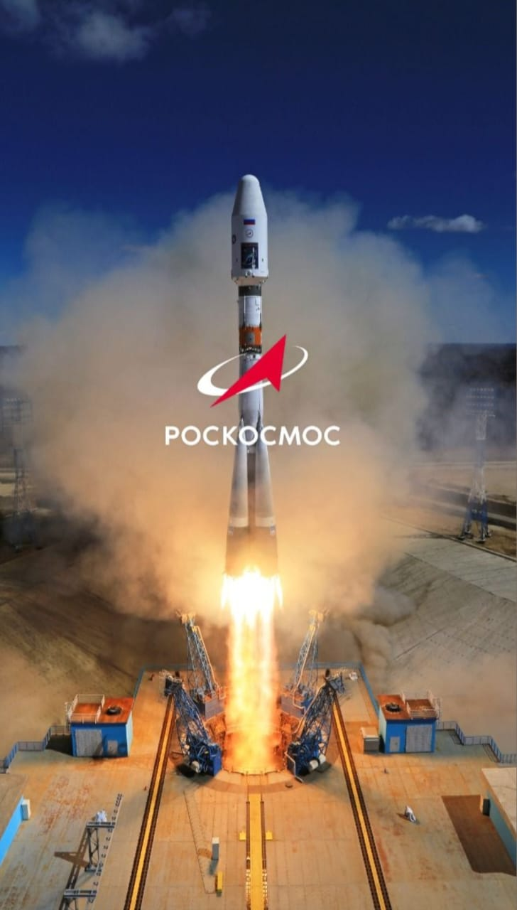

The Russian Federal Space Agency (RFSA), commonly known as Roscosmos, is Russia’s national space agency. It traces its roots to the Soviet space programme and was officially formed in 1992.
Russia was a pioneer in space exploration. It launched the first artificial satellite (Sputnik-1) and sent the first human, Yuri Gagarin, into space in 1961. These achievements marked the beginning of human spaceflight.

Roscosmos plays a crucial role in the International Space Station, especially through the Soyuz spacecraft, which has been used for decades to transport astronauts safely to and from the ISS.
The agency focuses on satellite systems, navigation, space science, and human spaceflight. Despite challenges, Roscosmos remains a key contributor to global space exploration.